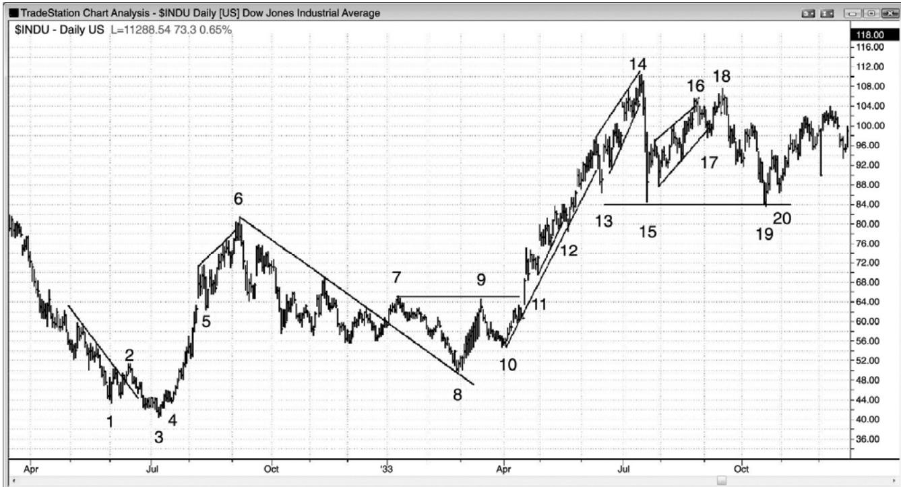
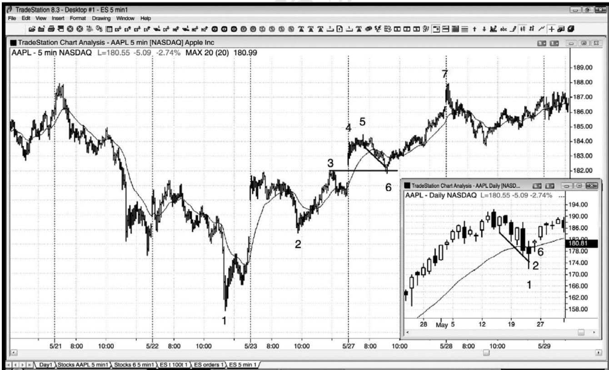
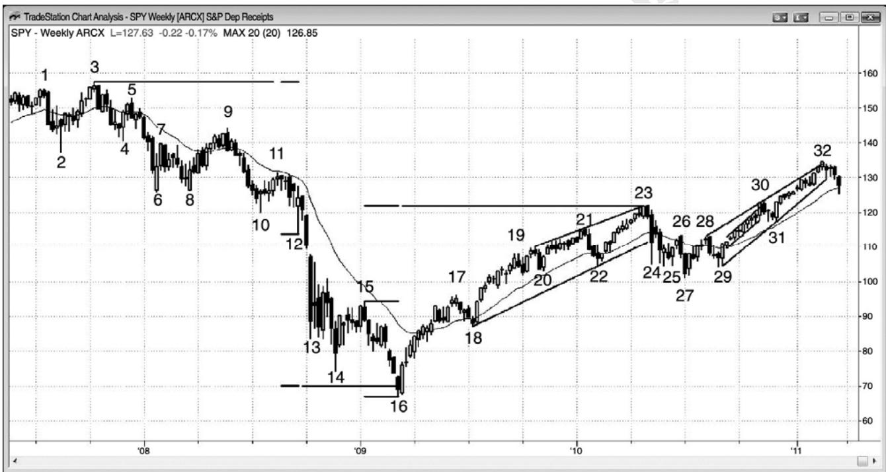
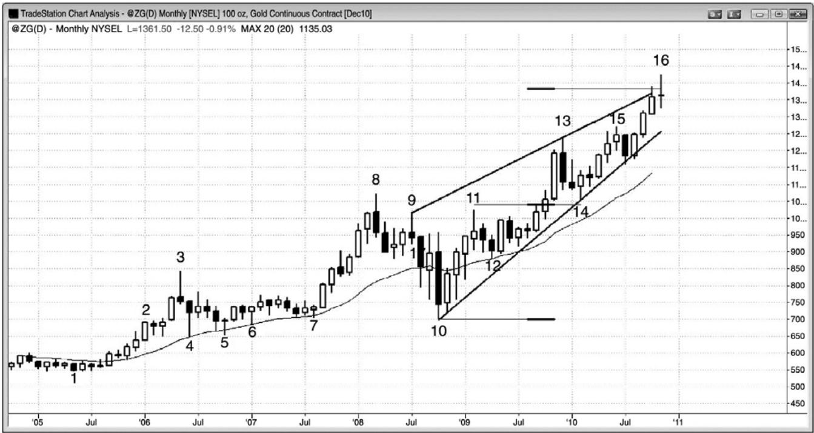
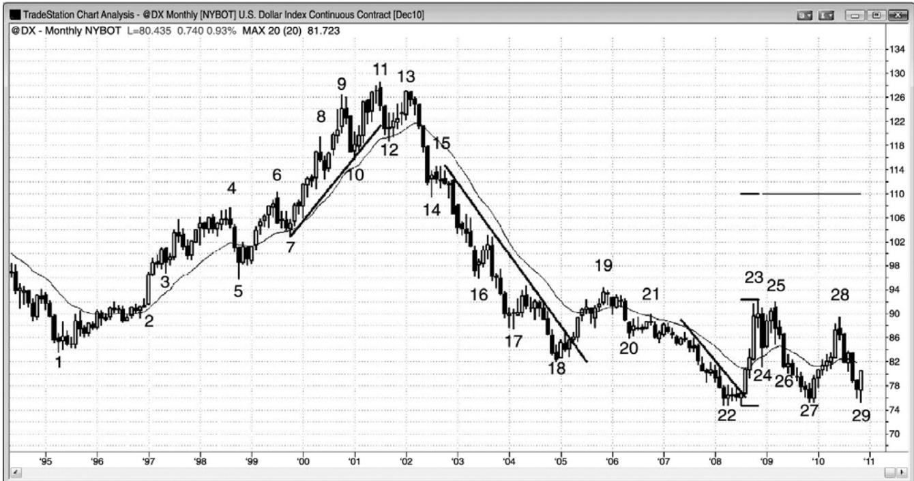
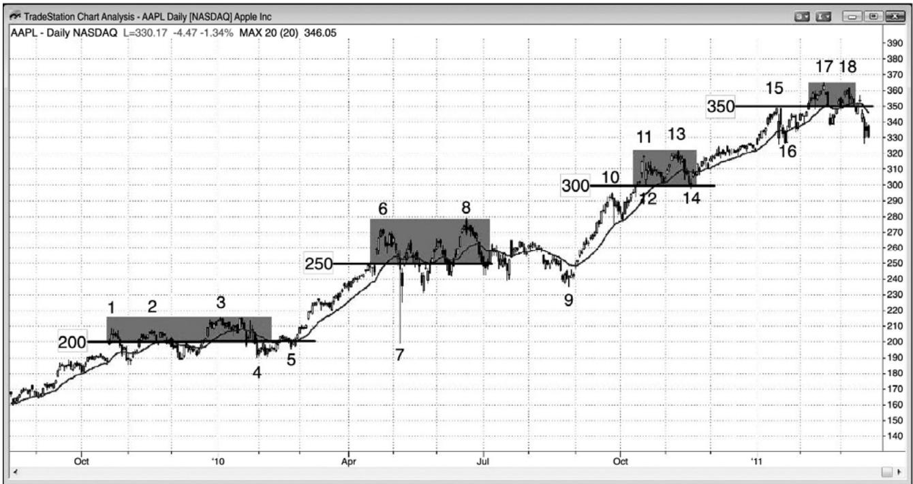
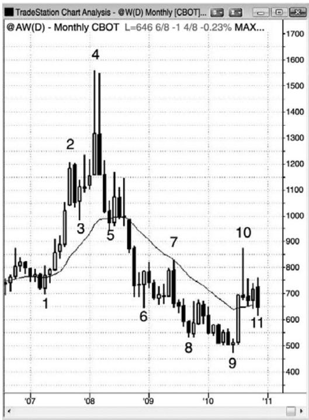
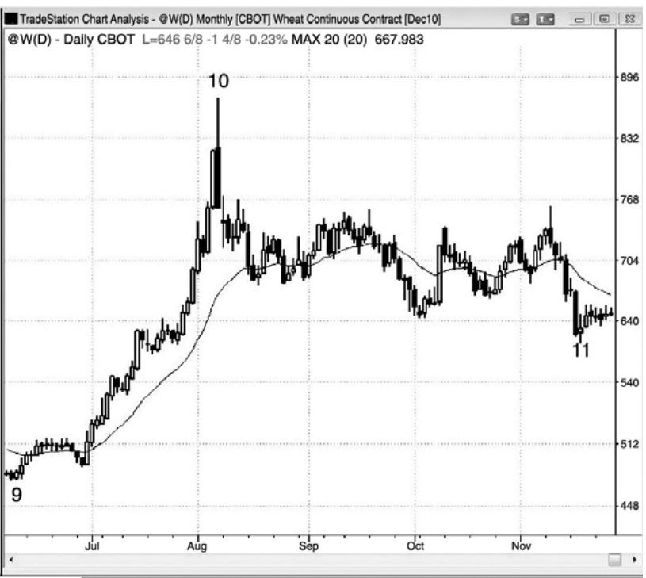
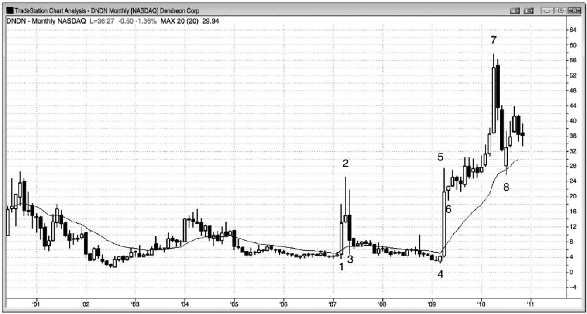

第22章 日线图、周线图和月线图¶
第 22 章 日线图、周线图和月线图
虽然日线图、周线图和月线图也可产生日内信号，但是非常少见，可能会令日内交易者分神，所以应该忽略。最常见的是那些基于昨天高点和低点的信号，你可以在 5 分钟图上看到它们。不过，这些较长时间框架上常常出现价格行为入场，但是，由于信号棒太长，如果风险与日内交易相同的话，那么所有交易的合约数量要少得多。另外，隔夜风险可能意味着你应该进一步减少合约或者考虑交易期权，期权拥有有限的风险，比如直接购买（outrightpurchases）或使用跨期组合（spreads）。对于日内交易者来说，仅应在交易日内不占用他的思想的情况下，才应交易这引动图表，原因是，当管理一笔根据日线图所做的合约数或股数非常少的交易时，很容易错过几笔大成交量的日内交易，而错过的那些交易除了足以弥补日内信号的收益外，还有剩余。
虽然所有股票都形成标准的价格行为形态，但是微型公司的股票几乎没有机构持股人，很有可能产生大的上下波动。它们更容易上下震荡，在股市术语中，这些股票被称为高贝塔（β）股。举例说明，你不会预期沃尔玛（WMT）在一个月内波动 1,000%，但是，当一家小型医药公司的某种药品得到食品和药品管理机构（FDA）的许可，或者突然被接管时，却刚好会发生那种事情。有些交易者喜欢大幅的快速波动，但是大部分交易者喜欢避开突发性风险、两个方向的巨幅波动、以及订单执行的失误。在这些特殊情况下交易的交易者们，必须密切关注那些股票，对于他们来说，很难再同时交易其他股票。由于风险非常高，所以他们只能交易投资组合中的一小部分，抹掉了大型运动带来的大部分收益。这种不可预测性会带来紧张感，所以大部分交易者不应碰这些股票。
当在与强趋势相反的方向上交易时，目标应该是1%或2%的刮头皮，因为大部分逆势交易只是成为顺势入场的回撤。缺口使入场变得复杂，一般而言，如果市场在昨日区间内开盘，然后穿过位于超出那一区间 1 个跳动处的止损入场，那么风险是较低的。如果你不能在日内观察股票，那么当出现跳空开盘时，或许最好略过那笔交易。如果你能够观察那只股票，而且出现跳空开盘，那么当市场恢复离开昨日区间的运动时，就要关注缺口回撤，然后利用进入缺口的失败回撤入场。换句话说，如果你正打算买进，但是今天向上跳空，那么就要在今天开盘寻找下跌，然后在开盘向上反转买进，把你的保护性止损设在今天低点下方。如果入场失败，你的止损被击中，那么就要观察别的地方，如果出现二次买进架构，就只能再做一次尝试。不要把太多时间花在走势与你的预期不同的股票上，因为那样你会赔钱。人们有一种自然倾向，那就是在亏损后希望在同一只股票上把钱再赚回来，但这是你情绪上的一个弱点。如果你感觉需要证明自己是正确的，需要证明自己是一位真正伟大的读图者，那么你的判断可能是正确的，但你不是一位伟大的交易者。伟大的交易者接受亏损，继续前行。
日内图表上的回撤很少会出现经典的反转棒，所以交易者们感觉比 5 分钟图上具有更多的不确定性。不确定性意味着风险，当存在更高风险时，头寸规模需要调小，交易者不得不考虑交易一部分头寸，然后当价格行为展开时加仓。在多头回撤中，如果市场又出现小幅下跌，那么可以在更低价位加仓，但是空头仍未表明他们在控制市场。在走势已经恢复，小幅回撤已经在你的初始入场点上方形成一个更高低点后，也可以在更高价位加仓。
当一天收盘后观察日线图时，你常常会看到需要在第二天考虑的架构。一旦那些架构触发，常常会出现一轮日内走势，提供很多好的 5 分钟顺势入场。如果那只股票不是你正常在日内交易的股票，但是它的成交量大约是 500 万股或更多，那么就值得考虑把它加入自己的日内交易股票篮中，做一两天的日内交易。不过，有时甚至流动性非常好的股票，比如 OilService HOLDRS（OIH），你的经济人也可能没有储备的股票供你卖空，你或许只有交易买进架构。如果你真的想做空，那么就可以买进看跌期权，甚至是日内交易。
由于大整数是磁力位，所以它们可能形成交易架构。举例说明，如果 Freeport-McMoRan（FCX）在过去几个月上涨了 20%，当前价位在93，那么很多交易者将假定它会达到 100。因此，空头不会积极做空，因为他们认为自己不久便能在更好的价位做空，多头将积极买进，因为他们认为 FCX 将会向上超越那个磁力位。这种空头的缺乏产生一个真空交易，结果常常使该股快速向磁力位上涨。在回撤之前，它一般会超越磁力位 5%到 10%，而在决定接下来如何运动之前，通常会回撤到那个大整数下方，至少回撤一次。当股票上涨进入大整数的磁场时，多头可以买进，并且在略高于磁力位时获利了结，空头可以等到市场超越大整数时做空，然后在向下测试时做空。多头通常会再次买进，做刮头皮交易。
P226
图22.1 价格行为没有随着时间的推移而改变

当大量交易者为了赚到尽可能多的钱而以不计其数的理由独立操作时，他们的累积结果便形成价格行为。因此，它的“指纹”一直保持不变，而且总是会为那些能够阅读它的人们提供一种可靠的赔钱工具。图 22.1 是道琼斯工作平均指数的一张日线图，时间是 1932 年和1933 年，看起来像今天任意时间框架上的任意一只股票。
棒 2 是一个低点 2，突破了一条趋势线。
棒 3 是趋势线突破后一个小型最终旗形反转，在对低点棒 1 测试时形成一个更低低点（趋势线突破后测试，可能是一个重要趋势反转）。
棒 4 是一个突破回撤和一个小型更高低点。
棒 5 是强多头尖峰中的第一次回撤，也是一个高点 2。
棒 6 是多头尖峰之后的一条楔形通道，引出两条大型的下跌腿，在棒 8 结束。
棒 7 是趋势线突破和两条腿回撤。它向上突破一个大型楔形多头旗形，那个旗形在第一次下推是在棒 5。
棒 8 是一个更低低点重要趋势反转和突破回撤、一个较大的楔形多头旗形、以及对棒 2的突破测试。
棒9向上突破从棒7到棒8的空头通道后，棒10是一个更高低点和回撤。空头通道是多头旗形。
棒11是一个小型高点2突破回撤，出现在向上突破失败的棒7和9双重顶空头旗形之后。
棒 12 和 13 是微型趋势线突破后的向上反转。
棒 14 是一个楔形和一个小型最终旗形反转。
棒 15 是一波强动能逆势运动，在反弹测试高点棒 14 之后很可能被测试。它与棒 13 形成一个双重底多头旗形，但是它的跌势很强，因此市场可能已经反转为总在场内空头。如果那个做多架构使得他们较难在更低高点做空，那么交易者们可能打算在一个更低高点做空，不打算在这里买进。有时，当交易者们做多头刮头皮时，他们正准备在一个更低高点做空，但是当做空架构形成时，他们却无法改变自己的思维定式。
棒 16 是一个楔形更低高点，棒 17 是对该楔形的失败的突破。
棒 18 是对多头趋势极点棒 14 的更低高点测试，是楔形更高高点突破回撤处的一个低点2 做空入场。出现一个对该楔形的失败的向下突破，截止棒 18 的反弹是对该楔形的一次更高高点突破回撤。另外一些交易者认为它是一个比结束于棒 16 的楔形更好的楔形。棒 18 也是对棒 14 信号棒低点的突破测试。
棒19是对棒15低点的测试，是一个双重底多头旗形。
棒 20 是向上反转过程中的一个更高低点回撤。

P227
如图 22.2 所示，当日线图上出现一个买进架构，市场向上跳空超越昨日高点时，交易者们常常会等待在 5 分钟图上的回撤买进。AAPL 在日线图（插图）上处于一轮强多头趋势中，在棒1形成一个第一均线回撤，它是一个空头趋势通道过冲（两张图上的编号是相同的）。日线图上的棒 2 有一个很强的日内向上反转，收盘靠近高点。希望在日线图上的棒 2 高点上方1 个跳动处买进是合理的，那是 5 分钟图上的棒 3 高点。然而，下一天向上跳空，超越了第二天的高点。与其冒着当天成为一个向下反转日的风险，不如等待 5 分钟图上回撤测试缺口后的向上反转更为谨慎。
5 分钟图上的棒 6 补上了那个缺口，同时是一条均线缺口棒和一个空头趋势通道过冲和向上反转。这是一个很棒的做多入场，保护性止损在棒 6 下方。这 62 美分的风险引出了 7 美元的收益。

如图 22.3 所示，从 SPY 的周线图上看，它是处于一波空头反弹之中，因为从棒 16 到棒32 的上涨运动比截止棒 16 的下跌运动的斜率要小。另外，市场没有保持在由上侧交易区间底部棒 6、8 和 10 所形成的阻力位上方。不过，反弹已经回溯了截止棒 16 的空头趋势的很大部分，所以空头趋势的影响已经剩下不多，市场已经变为一个大的交易区间。如果它是一个空头反弹，那么它最后应该测试低点棒 16。多头希望市场继续上涨，超越从棒 3 开始的空头趋势中的波段高点，最终突破至一个新的历史高点。空头希望市场在一个由棒 21、22、23、27 和 32 构成的扩张三角形中下跌，然后向下突破三角形的底部棒 27，随后到达一个低于棒16 的空头新低。由于反弹幅度已经非常大，所以该图已经变得更像是一个大的交易区间，它已经失去了来自趋势的确定性。不确定性是交易区间的标志；一旦市场表现出不确定性，它
通常就是在交易区间内，比如此处。
P228
在从棒3开始的下跌运动中，市场开始在棒5、9和11形成更低高点，在棒6、8、10和12 形成更低低点。由于仍然出现强空头突破，所以几率偏向于这次抛盘成为对交易区间底部的测试，或者可能成为一个大的多头旗形。有些交易者认为，截止棒 6 的空头尖峰可能已经令市场翻转为总在场内空头，不过截止棒13的空头尖峰令任何心存疑虑的交易者都认为市场已经翻转为总在场内空头。
棒 14 是一波二次卖出高潮的第三棒，尝试在一个最终旗形之后形成双棒反转，但是市场又形成一波从棒 15 开始的尖峰和高潮空头下跌。这是第三波卖出高潮，形成一个楔形底（棒13、14 和 16）。底部刚好经过基于上侧交易区间的高度的测量运动目标。
截止棒 17 的上涨运动包含 12 个多头实体，尾线短小，而且只有一两个多头（译注：应为空头）实体，所以大部分交易者会把它看作一个尖峰。在棒 16 三个卖出高潮和这个上涨尖峰之后，交易者们认为至少应该形成第二条上涨腿，可能是一波基于棒 16 低点到棒 15 或棒17 高点的测量运动。
棒23略微向上超越那个测量运动目标和趋势通道线的顶部，它是上侧交易区间底部棒6、8 和 10 区域内的一个双棒向下反转。第一个目标是向下突破通道，那发生在棒 24。第二条下跌腿在棒 27 双棒反转结束。在棒 28 突破从棒 23 开始的两条腿多头旗形之后，棒 29 形成一个更高低点突破回撤。它也是一个头肩底多头旗形的右肩，其中左肩形成于棒 24 和棒 25 之间。棒21和棒28之间的交易区间也是一个头肩顶，其中棒21是左肩，棒23是头，棒26和28 双重顶是右肩。在 80%的顶部形态中，市场向上突破，空头再次学到大部分顶部只是多头旗形。
从棒 29 到棒 32 的运动是在一条相对紧凑的多头通道内，很容易跟着更高的价格。然而，由于整张图表是一个大的交易区间，所以大幅反弹之后通常跟着大幅下跌，市场可能不久便开始向下调整至扩张三角形的底部棒27，甚至到达空头低点棒16区域。
棒 16 是一波向下的测量运动。大部分机构做的是他们认为将会成功的交易，也就是说胜率至少是 60%。因此，他们至少需要一波测量运动才能得到一个正的交易者方程（测量运动目标处，回报变得与风险一样大，交易者方程的获利性开始变得合理）。结果是交易常常刚好击中某个目标，然后便反转或至少是暂停，原因是很多公司会在那里部分或全部获利了结。大部分目标，比如所有的支撑和阻力，不久会失败，因为测量运动是最低要求，而且很多公司感觉市场的强度足以越过那些目标。

如图 22.4 所示，在从棒 7 到棒 8 的多头尖峰之后，黄金在月线图上的走势处于一条楔形通道之内。有些交易者会把当前的运动看作第三次上推，棒 11 和 13 是头两推。另外一些交易者把棒8或棒9看作第一推。
P229
每当 5 到 10 棒接近一条趋势线时，市场很可能不久便跌破那条趋势线。这使得从棒 10开始的多头趋势线很容易被向下突破。由于市场刚好位于趋势通道线和测量运动目标上方，所以几率偏向于两条腿抛盘很快开始。最低限度，市场应该调整至略低于棒 8 高点处，有可能调整至楔形底部棒10。不大可能的情况是，市场将向上突破楔形顶部，形成一波向上的测量运动。
图 22.5 美元期货指数月线图

如图22.5所示，美元期货月线图中有几笔交易称得上是最佳交易。美元与瑞士法郎和日元一起，都是风险厌恶型倾向，当交易者们认为股市将要下跌时，他们一般会去购买那些货币。
当美元向上突破棒 2 处空头旗形的顶部时，形成一个多头尖峰，使市场转变为总在场内多头。然后，形成一条通道，棒 5 测试通道起点棒 3 的底部。这在棒 5 形成一个双重底多头旗形，随后在棒7形成一个突破回撤买进架构。市场在棒11更高高点处见顶。有些交易者把从棒 3 到棒 11 的运动看作一条较宽的通道，有些交易者则认为通道开始于棒 5 或棒 7。所有交易者都猜测棒 11 或棒 13 可能是向通道底部调整的起点，因为市场的双向性正在增强，出现了几次反转和一些突出的空头实体。这些都代表着卖压在累积。
截止棒 10 的下跌运动是一条强空头趋势棒，它向下突破了一条从棒 7 开始的陡峭的多头趋势线（未画出）。这波下跌运动很强，使得很多多头在反弹至棒 11 处的新高时获利了结。空头开始在那个更高高点处做空，而在棒13更低高点重要趋势反转处，他们的做空甚至更加积极。截止棒 12 的下跌运动包含两条强空头趋势棒，向下突破了多头趋势线。市场应该至少形成两条下跌腿，但是形成了一个截止棒 14 的空头下跌尖峰和截止棒 18 的一条下降通道。截止棒 14 的下跌说服大部分市场已经翻转为总在场内空头，所以随后应该出现更多卖出行为。
空头通道继续向下延续至棒 18，它是一轮大的空头趋势终点处的一波卖出高潮中的第五棒。交易者们预期出现一波反弹，至少到达均线。它也与棒1形成一个双重底。
均线处形成一个20缺口棒做空架构，但是，由于上涨尖峰很强，所以最好等待二次信号。
第二个信号出现在棒 19 均线缺口棒，它与棒 17 之后的小幅反弹的高点形成一个双重顶空头旗形。
截止棒 20 的下跌尖峰之后是一波抛物线下跌，所以是高潮下跌通道，到棒 22 结束。市场在那里形成一个更低低点重要趋势反转。那里，市场在一个 iii 形态（只看实体）的变种中横向运动。一个失败的低点 1 做空架构在一个小型双重底中向上反转，截止棒 23 的多头上涨尖峰特别强劲。这可能会将市场翻转为总在场内多头，使得多头努力使市场维持在尖峰的底部上方。他们在低点附近积极买进，也在棒 27 和 29 积极买进，制造了一个双重底多头旗形。棒 27 是一个双重底重要趋势反转，棒 29 是一个三角形内第三次下推后的向上反转，三角形最终会向上或向下突破。
楔形多头旗形（棒 24、26、27）之后是另一波反弹，然后在棒 29 形成一个双重底。对于多头来说，这是一个风险/回报比非常好的架构，因为交易者是在交易区间的底部买进。等距上涨的概率可能是 60%，因为市场位于交易区间的底部。风险约为$5.00，市场有 60%的可能会测试交易区间的顶部棒 28。交易者将是在胜率为 60%的情况下冒着$5.00 的风险去博取$10.00，那是一笔非常棒的交易。每笔交易的平均利润将达到$4.00 左右。因为这也是一个双重底多头旗形，所以几率可能大于 60%。目标将是超出这段交易区间的一波向上的测量运动，将测试空头通道的顶部棒 15 附近区域。
P230
重要的是认识到，这意味着大约有40%的可能性市场会跌破棒22低点，因此，如果那种情况发生，交易者们需要离场。如果市场跌破棒 22 低点，那么下个目标将是一波向下的测量运动，基准是棒27到棒28或棒22到23的下跌腿的高度。
即便市场真的上涨，几率也偏向于他将在棒 11 高点附近停止，形成一个更大的交易区间。
图22.6 整数可能是支撑和阻力。

图 22.6 所示是 AAPL 的日线图，市场处于一轮强劲的多头趋势中，在重要的整数关口下方停顿，那些整数关口常常是吸引市场的磁力位。一旦足够多的交易者认为市场将要到达某个磁力位，那么空头将停止做空，市场将在一个买进真空中反弹至那个目标上方。举例说明，空头认为市场将会超越$300，而且至少越过 5%到 10%，因为那是市场处于整数价位的磁场内时的一贯做法。由于空头预期市场会达到$315 附近（超越整数价位 5%），所以他们在一旁观望。当他们认为市场将在几棒之内变得更高时，在市场到达那一价位前做空是不合理的。他们的缺乏导致市场快速上涨，因为多头不得不推动市场进一步上涨，以便找到足够的交易者站在他们的多头交易的相对一方。
一旦市场超越目标 5%到 10%，多头便开始获利了结，空头开始做空，预期市场向下回转，测试那个整数价位，那个价位通常至少会被刺穿一次。向低点棒 12 的回撤与$300 价位仅差 1便士（棒 12 低点是$300.01），市场快速反弹，进入那一天收盘。棒 13 附近的双重顶做空架构成功驱动 AAPL 跌破$300，但是买家返回，形成棒 14 双重底。
图22.7 日线图和月线图可能处于相反的趋势中


P231
如图22.7所示，右侧日线图上，小麦形成一波迅猛的反弹，但那只是左侧月线图上一波空头市场反弹，其中棒10形成空头趋势中的一条均线缺口棒，与棒7形成一个双重顶空头旗形，是对上侧交易区间（一个头肩顶）底部棒 3 和棒 5 的突破测试。两张图上的编号是相同的。
在日线图上的空头反转棒棒 10 形成的前一天，一位专家在电视上说，小麦正在大幅上涨，他正在市价和回撤买进。当一轮趋势在一个长多头尖峰（10 到 20 棒）之后形成大型多头趋势棒时，形成延长的两条腿回撤的风险比较高，原因是大部分强势多头只会在明显的回撤买进，而大部分强势空头会在市价做空，而且会随着价格上涨而加仓。关于小麦即将大幅上涨的说法，电视专家可能最终是正确的，但是在抛物线尖峰和高潮的顶部买进，耗费了太多的资金。相反地，他应该去做机构正在做的事情。空头正在做空，多头正在等待两条腿回撤，然后买进。
在棒 10 前一天，与小麦相关的新闻显然是非常看涨的，但那一点关系也没有。图表告诉交易者们强势空头和多头正预期出现一波大的调整。尖峰和抛物线高潮告诉交易者们，弱势多头和空头正在做错误的事情，强势多头和空头正把赌注压在回撤上。交易中最好的赚钱方法是去做聪明钱正在做的事情，而不是去听电视专家在说什么。聪明钱的资金如此雄厚，以至于那些聪明的交易者们无法掩饰他们正在做什么。不过，你必须能够阅读图表，明白市场中正在发生什么。

如图 22.8 所示，由于它的治疗前列腺癌的药物发布，Dendreon Corporation（DNDN）出现了迅猛的上涨和下跌。在截止棒 2 的两个月里，它的股价上窜了 800%，接下来的一两个月里，又把那些收益的 90%还给了市场。接下来，截止棒 7 它又上涨了 2,000%，然后在接下来的三个月里跌去了 50%。面对巨幅上涨和下跌的风险，交易者们只能交易较小的规模，减小的头寸规模抵消了大型波段产生的任何收益。不可预测性会使人变得紧张，对于大部分交易者来说，当处于这样的市场中时，几乎不可能再去做其他的任何交易，如果避开这些特殊行情，他们可能会赚得更多。那些行情看起来很有趣，但是你的目标是赚很多钱，不是获得情绪上的冲动，也不是在稀有大行情中赚一点钱来获得某种毫无意义的自豪感。
P232
（内容移至上页）
P233